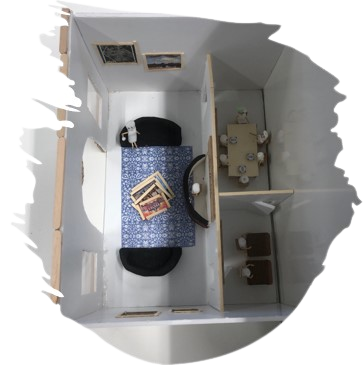
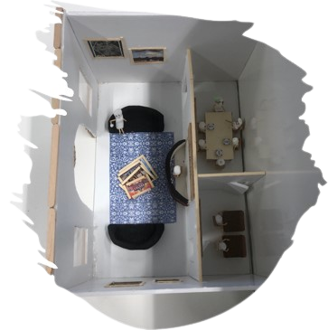

Tino's VR Ervaring
Project Overzicht
Dit was het tweede project van het jaar waar we een Tino's ervaring creëerden. Samen met Jakob, Ties en Romy ontwikkelden we een VR-applicatie die gebruikers meeneemt op een virtuele tour door de grachten van Delft en een Delfts Blauw workshop ervaring.
VR Applicatie
Project Modellen
 
